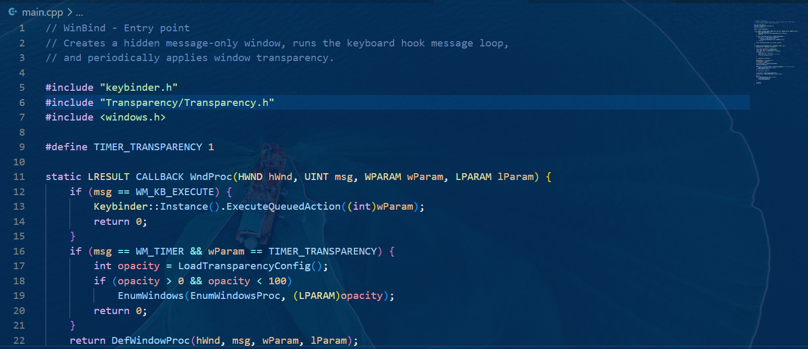
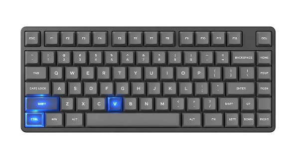

It is free.
Forever.
No bills at midnight. It's all yours
Assign your own keybinds.
Assign windows your personalisation.
Make windows finally yours.
This project is COMPLETELY opensource. I promote opensource software,
create opensource software and will never stop.
You can go Check the Code, Modify the Code, and Compile on your own.
You can even go Contribute in my project.
Your Contibution is valuble to me, to make the project better.
Please do contribute, to make this project even more complete.

Not just another customization app. This is an app which let's you
be the boss of Windows.
Let you command windows and not windows command you.
My soul aim is to reduce the user friction to use Windows to NULL.
It should be exactly how the user wants. No excuses.

Don't like the current shortcuts? Change it.
Don't like the opacity of a window? Change it.
Want to hear a soft background music? Hear it.
Want the window border to be blue? Change it.
Want a shortcut to simulate ANOTHER key? Do it.
Want a shortcut to launch your Browser? Do it.
All of this is AT your power, if you touch the winbind.conf and read Documentation.
Just use 30 minutes to setup the .conf, reap the rewards that will save you thousands of minutes.